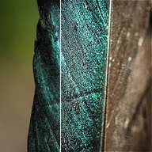

Schärfen

Wendet eine Unscharfmaskierung mit einer 3x3-Nachbarschaft an, um feine Details zu betonen.
Schärfen holt feine Details hervor. Stärke gibt an, wie viel, und Radius, wie breit die geschärften Kanten sind. Zu viel erzeugt Lichthöfe um Kanten. Für eine andere Schärfemethode probiere Unscharf maskieren.
Einstellungen
| Einstellung | Typ | Bereich | Standard |
|---|---|---|---|
| Stärke | Zahl | 0 bis 20 | 1 |
| Radius | Zahl | 0.5 bis 10 | 1 |